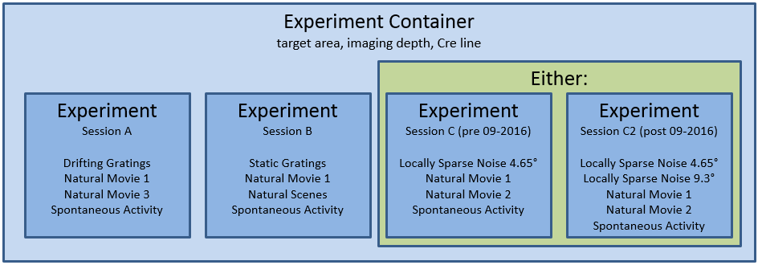

Brain Observatory¶
The Allen Brain Observatory is a database of the visually-evoked functional responses of neurons in mouse visual cortex based on 2-photon fluorescence imaging. Characterized responses include orientation tuning, spatial and temporal frequency tuning, temporal dynamics, and spatial receptive field structure.
The data is organized into experiments and experiment containers. An experiment container represents a group of experiments with the same targeted imaging area, imaging depth, and Cre line. The individual experiments within an experiment container have different stimulus protocols, but cover the same imaging field of view.
For more information on experimental design and a data overview, please visit the Allen Brain Observatory data portal.
Data Processing¶
For all data in Allen Brain Observatory, we perform the following processing:
- Segment cell masks from each experiment’s 2-photon fluorescence video
- Associate cells from experiments belonging to the same experiment container and assign unique IDs
- Extract each cell’s mean fluorescence trace
- Extract mean fluorescence traces from each cell’s surrounding neuropil
- Estimate neuropil-corrected fluorescence traces
- Compute dF/F
- Compute stimulus-specific tuning metrics
All traces and masks for segmented cells in an experiment are stored in a Neurodata Without Borders (NWB) file. Stored traces include the raw fluoresence trace, neuropil trace, and dF/F trace. Code for extracting neuropil-corrected fluorescence traces, computing dF/F, and computing tuning metrics is available in the SDK.
For more information about data processing, please read the technical whitepapers.
Getting Started¶
The Brain Observatory Jupyter notebook has many code samples to help get started with the available data:
- Download experimental metadata by visual area, imaging depth, and Cre line
- Find cells with specific response properties, like direction tuning
- Download data for an experiment
- Plot raw fluorescences traces, neuropil-corrected traces, and dF/F
- Find the ROI mask for a given cell
- Run neuropil correction
The code used to analyze and visualize data in the Allen Brain Observatory data portal is available as part of the SDK. Take a look at this Jupyter notebook to find out how to:
More detailed documentation is available demonstrating how to: